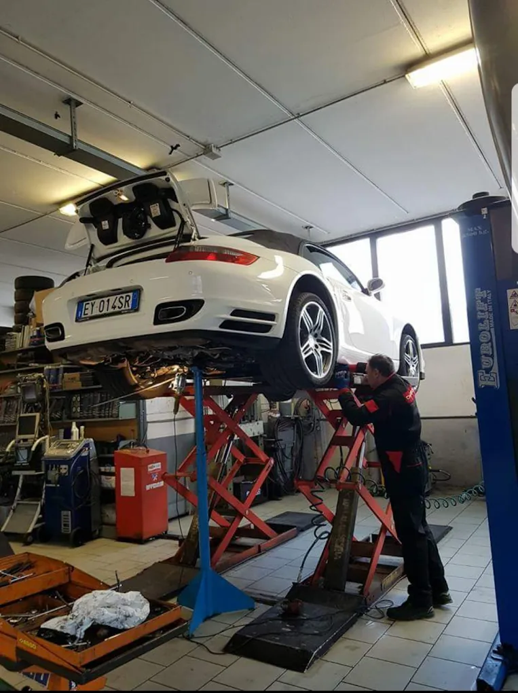

Foto da sostituire
Il titolare
Segue di persona le auto che entrano in officina e fa i preventivi: se c'è da spiegare un lavoro, è lui che ti chiama.
Dall'apertura nel 1986 a oggi: le tappe che hanno fatto di Autocar Service l'officina che conosci a Saint-Marcel.
Autocar Service nasce nel 1986 nella zona industriale di Saint-Marcel, con un ponte sollevatore e una regola semplice: spiegare al cliente cosa serve davvero prima di mettere mano all'auto.
In quarant'anni sono cambiate le auto, gli strumenti e le persone che le guidano, ma quella regola è rimasta. Oggi seguiamo meccanica, gomme, impianti elettrici e preparazioni sportive sotto lo stesso tetto.
L'officina apre nella zona industriale di Saint-Marcel con un solo ponte sollevatore e pochi attrezzi. Il lavoro è quello di tutti i giorni: tagliandi, freni e frizioni sulle auto di chi abita in paese e nei dintorni. Fin dal primo giorno il preventivo si fa prima di iniziare, non dopo.
Con gli inverni della valle cresce la richiesta di cambi gomme stagionali. Arrivano lo smontagomme e l'equilibratrice, e nasce il deposito per tenere le gomme dei clienti al coperto tra un cambio e l'altro. Molti di quei clienti tornano ancora oggi, due volte l'anno.
I clienti aumentano e l'officina si allarga: un secondo ponte sollevatore permette di lavorare su più auto insieme e di accorciare i tempi di attesa. Cambia lo spazio, non il metodo: ogni auto viene controllata e spiegata come prima.
Le auto si riempiono di centraline e l'officina si aggiorna: arriva la diagnosi computerizzata e nasce il reparto elettrauto. I guasti si trovano leggendo i dati del motore, non andando per tentativi e cambiando pezzi a caso.
Dalla passione per i motori nascono le prime elaborazioni: messe a punto, assetti, freni e scarichi su misura, seguiti dalla progettazione al collaudo. Tutto nella stessa officina che si occupa della manutenzione di ogni giorno.
Sei settori sotto lo stesso tetto e clienti che tornano da decenni, spesso da una generazione all'altra. Le auto sono cambiate, gli strumenti anche, ma la regola è quella del primo giorno: prima si spiega, poi si lavora.

Scatto reale, dalla nostra officinaPoche persone, sempre le stesse: sai con chi parli e chi lavora sulla tua auto.
Segue di persona le auto che entrano in officina e fa i preventivi: se c'è da spiegare un lavoro, è lui che ti chiama.
Meccanica, diagnosi e preparazioni: le mani che lavorano sulla tua auto e che ti mostrano cosa hanno trovato.
Ti accoglie al banco, fissa gli appuntamenti per i cambi stagionali e tiene in ordine il deposito gomme.
Preventivo scritto prima di iniziare e una telefonata se durante il lavoro salta fuori qualcosa che non era previsto.
Ricambi tracciabili, garanzia su pezzi e manodopera e nessun intervento fatto solo “per stare tranquilli”.
Clienti che tornano da anni, spesso da una generazione all'altra: è il biglietto da visita a cui teniamo di più.